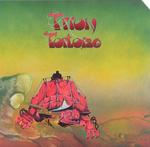

| Artist: | Trion |
| Title: | Tortoise |
| Label: | Cyclops CYCL 135 |
| Length(s): | 50 minutes |
| Year(s) of release: | 2003 |
| Month of review: | [01/2004] |
| 1) | Tortoise | 5.29 |
| 2) | The New Moon | 8.03 |
| 3) | Hindsight | 3.35 |
| 4) | Radiation Part 1 | 1.30 |
| 5) | Jemetrion | 6.09 |
| 6) | Radiation Part 2 | 1.20 |
| 7) | The Seagulls | 5.58 |
| 8) | Hurt | 1.50 |
| 9) | Tribulation | 7.06 |
| 10) | Spectrum Of Colours | 3.22 |
| 11) | Endgame | 5.39 |
The New Moon is quite a bit longer and full of wavery sounding organ. The guitar is more acoustic this time, the mid-tempo drums are maybe a bit too unadventurous. Notwithstanding the fact that this is not Flamborough Head, the trio does have the same warm mellowness to them. The lead guitar solo has a bluesy feel in the vein of Focus. Halfway the military drums set in, but in fact the bulk of the second half features sad strings (on mellotron sample, last time I said this). The lonesome guitar solo is again in the mellow Focus vein.
Hindsight opens with finger picking acoustics, and the mellow flute is also present again. The songs breathe the right kind of atmosphere I think, but they do lack a bit in memorableness. For that the melodies are simply not strong enough. A very lazy tune this. The concluding guitar solo is a fine sharp one, though.
Radiation Part 1 is a short one, plenty of foreboding, lots of eerie guitar work and cymbals. Jemetrion is wedged in between the two parts, opening with frolic acoustic guitar. The band seems to have decided to stay on the mellow side most of the time, and rocking away only once in a while. I guess I hoped for some more excitement. But the pace does go up, although the frolicness does crop up in places. Some more tension, more power and bombast, please... Radiation Part 2 is quite jazzy in outset.
The Seagulls is a melancholic tune, this time the tron being in the forefront again. This is one of the better tracks, mainly by virtue of the good lead guitar melody and some more subtle flute tron work. A good one. Hurt is a shorty once again. The melody on acoustic guitar does have a familiar ring to it, but I can not bring it home.
Tribulation sets in forcefully, but comes back down to a more laid back passage quite soon. The feeling is a bit in the direction of Genesis. This is what we might a tronballad, with the guitar playing question answer with the flute samples. The main theme is quite uplifting and certainly has some appeal. The main gist of this song is closer to Boomsma's band, Odyssice with the emotive guitar lines a la Latimer. However, the fire could have been a bit more pronounced.
With Spectrum Of Colours we arrive at something subtle and sensitive. The strings and acoustic guitar make for a friendly, something sad type of song with later on some pedal steel.
We close down with Endgame, named such for obvious reasons. Dramatic guitar lines, melodious and strong make for an easy thing to latch onto. For me, this is all a bit too melodramatic.
Overall the album has a very live feel.